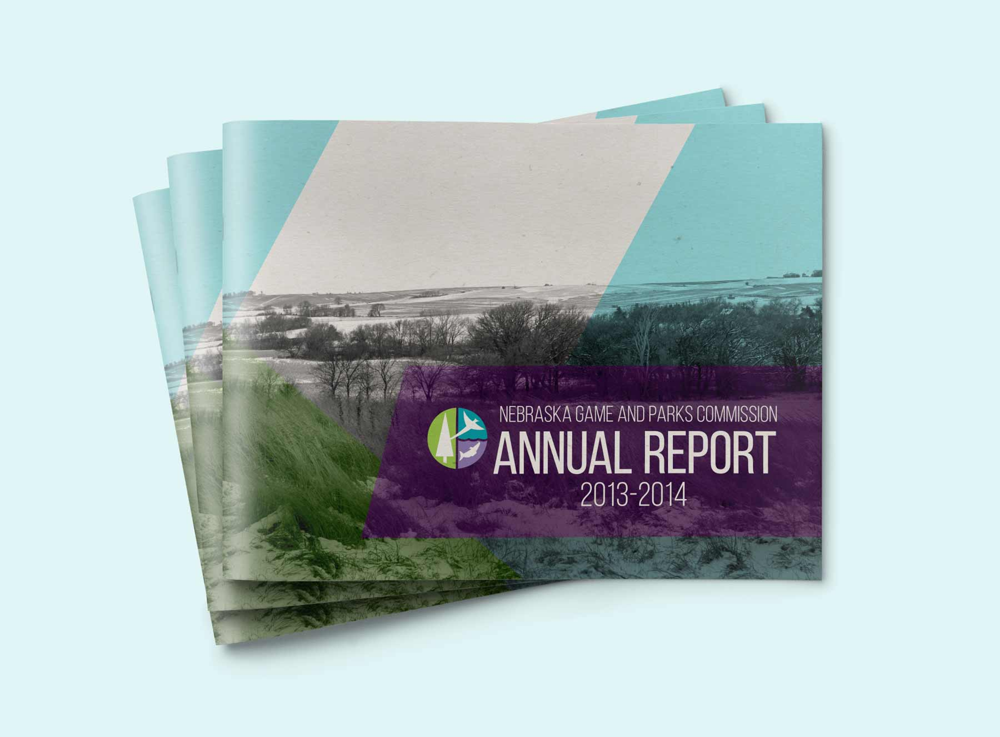
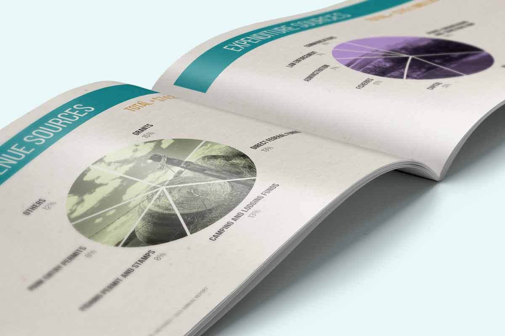
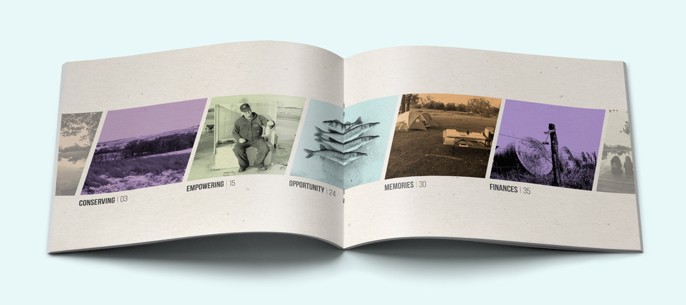
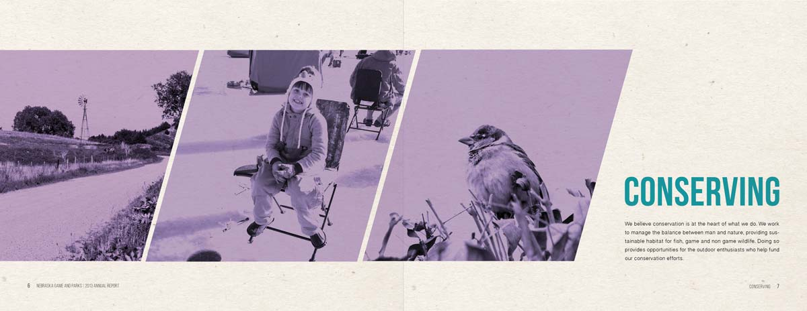
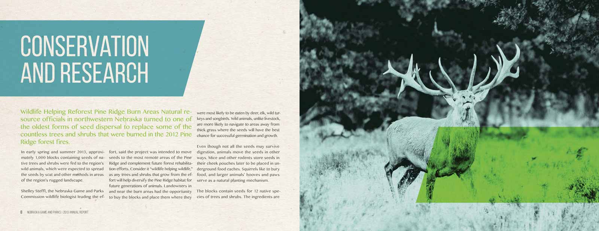
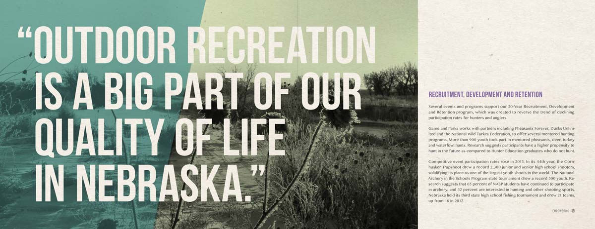

Nebraska Game and Parks
annual report:
photography, print
Nebraska Game and Parks, is an outdoor recreation of the state’s fish, wildlife, park, and recreation resources. They were in need of an annual report that thrives on the quality of outdoor recreation. The Game and Parks targets primarily blue–collar males ages 30–45. These men are supporters, donors and adventurous outdoorsmen who own a truck, enjoy outdoor living, appreciate nature, and have a long history of blue–collar values within their families.





